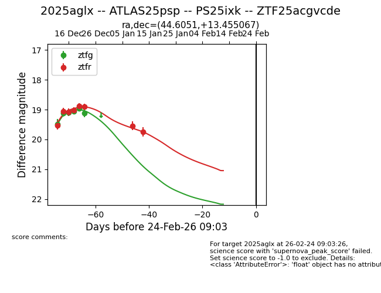
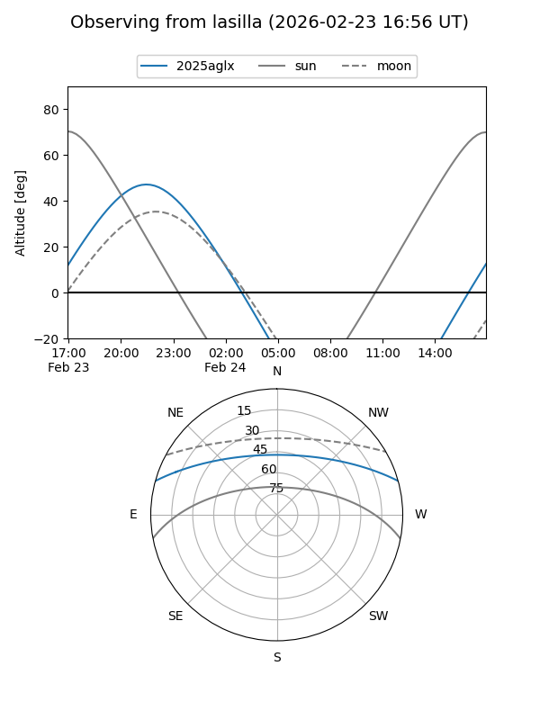
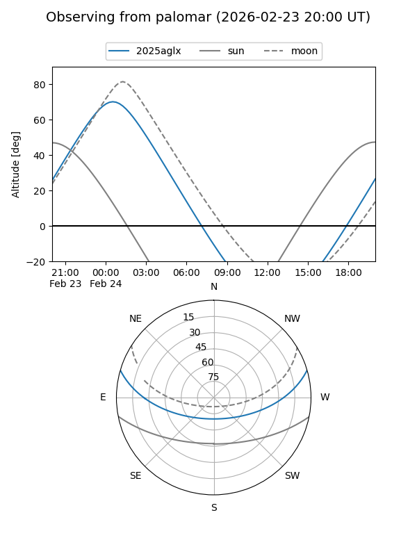
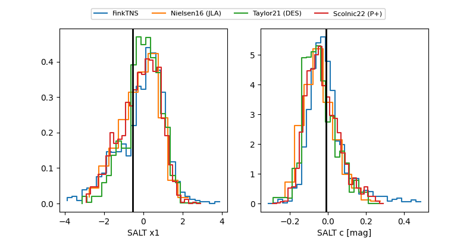

2025aglx
Target 2025aglx at 2025-12-22 16:01
Aliases and brokers:
FINK: fink-portal.org/ZTF25acgvcde
Lasair: lasair-ztf.lsst.ac.uk/objects/ZTF25acgvcde
ALeRCE: alerce.online/object/ZTF25acgvcde
TNS: wis-tns.org/object/2025aglx
YSE: ziggy.ucolick.org/yse/transient_detail/2025aglx
alt names
ZTF25acgvcde (ztf,fink_ztf)
2025aglx (tns,yse)
ATLAS25psp (atlas)
Coordinates:
equatorial (ra, dec) = 44.6052,+13.45500
equatorial (HMS+DMS) = 02:58:25.24,+13:27:18.01
galactic (l, b) = (164.1472,-39.04766)
Flags:
Photometry:
last atlasc=19.08, atlaso=19.17, ztfg=19.11, ztfr=18.91
2 atlasc, 1 atlaso, 6 ztfg, 6 ztfr detections
Lightcurve

Visibility


Additional plots
